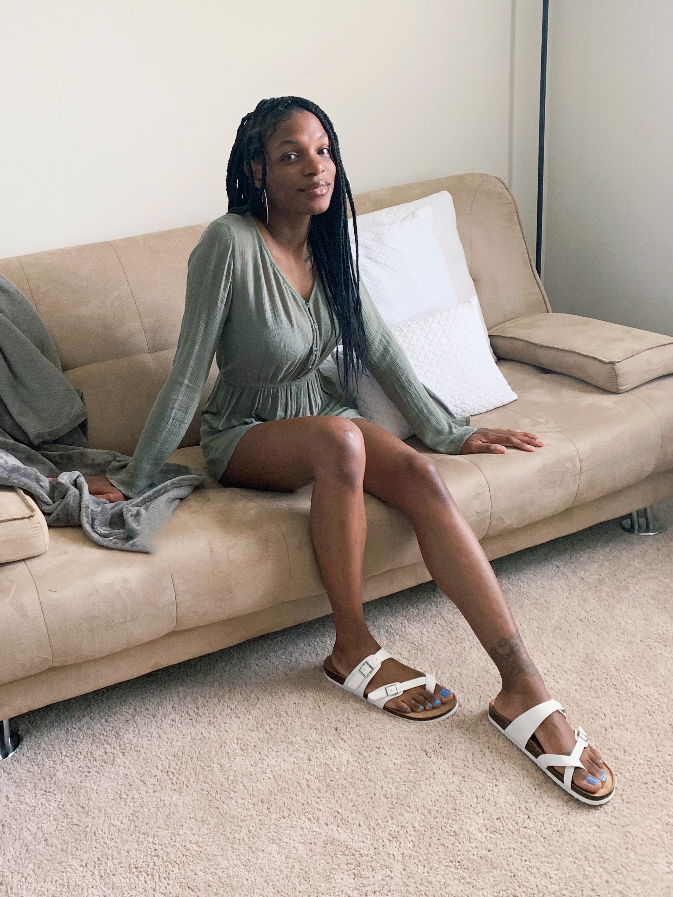
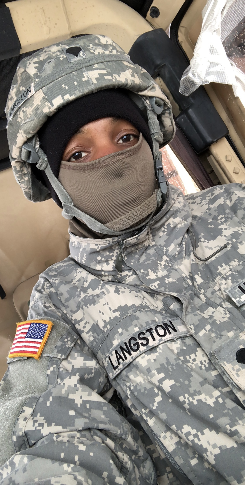

- 
- 
About Me
My name is Tacheyana Langston. I, along with my twin brother, were born on July 14, 1994 in Queens, New York.
I grew up all over NYC, but spent majority of my childhood in The Bronx. In 2008, my mother decided to move
to Columbia, South Carolina. After graduating High School in 2012, I decided to join the military. I stayed in the
military for about 7 years. During my time in the Army, I had two children Nora and Nolyn. After departing from the Army,
I decided to move to Atlanta, Georgia and I love it here. I obtained my Esthetician certification from Atlanta School of
Esthetics in 2020.
Why Tech?
I've always been secretly into technology, but never fully explored it. Around 2021 Thanksgiving, I was talking
to my oldest brother, who works in Cybersecurity, about my intrest and he suggested I look into Web Development.
I went down a rabbit hole on YouTube. And here we are :) Although I have no background or experience, I know that I
will do well in the end beacuse I can do anything I put my mind to!
Plans For The Future
After completing this cohort, I plan to continue to develop my skills and become the best programmer I can
possibably be. I hope to get a remote job that way I am close to my kids school in case of an emergency, also
no traffic to drive in.